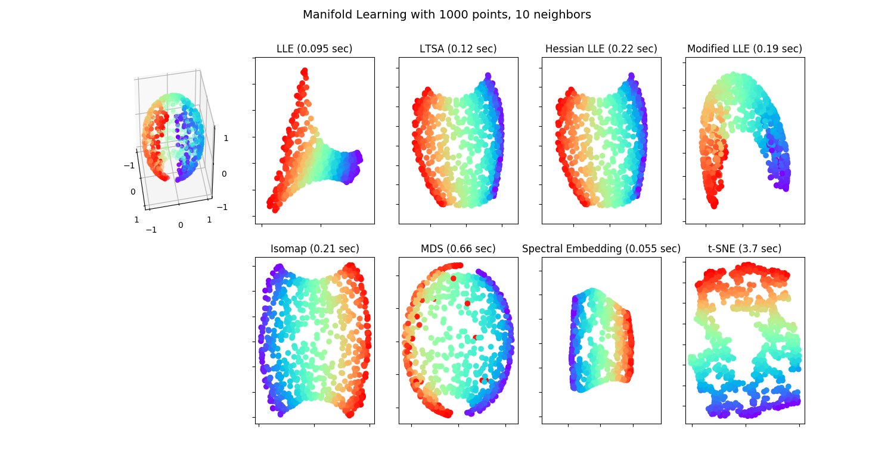

Note
Click here to download the full example code or run this example in your browser via Binder
Manifold Learning methods on a severed sphere¶
An application of the different Manifold learning techniques on a spherical data-set. Here one can see the use of dimensionality reduction in order to gain some intuition regarding the manifold learning methods. Regarding the dataset, the poles are cut from the sphere, as well as a thin slice down its side. This enables the manifold learning techniques to ‘spread it open’ whilst projecting it onto two dimensions.
For a similar example, where the methods are applied to the S-curve dataset, see Comparison of Manifold Learning methods
Note that the purpose of the MDS is to find a low-dimensional representation of the data (here 2D) in which the distances respect well the distances in the original high-dimensional space, unlike other manifold-learning algorithms, it does not seeks an isotropic representation of the data in the low-dimensional space. Here the manifold problem matches fairly that of representing a flat map of the Earth, as with map projection
Out:
standard: 0.095 sec
ltsa: 0.12 sec
hessian: 0.22 sec
modified: 0.19 sec
ISO: 0.21 sec
MDS: 0.66 sec
Spectral Embedding: 0.055 sec
t-SNE: 3.7 sec
# Author: Jaques Grobler <jaques.grobler@inria.fr>
# License: BSD 3 clause
print(__doc__)
from time import time
import numpy as np
import matplotlib.pyplot as plt
from mpl_toolkits.mplot3d import Axes3D
from matplotlib.ticker import NullFormatter
from sklearn import manifold
from sklearn.utils import check_random_state
# Next line to silence pyflakes.
Axes3D
# Variables for manifold learning.
n_neighbors = 10
n_samples = 1000
# Create our sphere.
random_state = check_random_state(0)
p = random_state.rand(n_samples) * (2 * np.pi - 0.55)
t = random_state.rand(n_samples) * np.pi
# Sever the poles from the sphere.
indices = ((t < (np.pi - (np.pi / 8))) & (t > ((np.pi / 8))))
colors = p[indices]
x, y, z = np.sin(t[indices]) * np.cos(p[indices]), \
np.sin(t[indices]) * np.sin(p[indices]), \
np.cos(t[indices])
# Plot our dataset.
fig = plt.figure(figsize=(15, 8))
plt.suptitle("Manifold Learning with %i points, %i neighbors"
% (1000, n_neighbors), fontsize=14)
ax = fig.add_subplot(251, projection='3d')
ax.scatter(x, y, z, c=p[indices], cmap=plt.cm.rainbow)
ax.view_init(40, -10)
sphere_data = np.array([x, y, z]).T
# Perform Locally Linear Embedding Manifold learning
methods = ['standard', 'ltsa', 'hessian', 'modified']
labels = ['LLE', 'LTSA', 'Hessian LLE', 'Modified LLE']
for i, method in enumerate(methods):
t0 = time()
trans_data = manifold\
.LocallyLinearEmbedding(n_neighbors, 2,
method=method).fit_transform(sphere_data).T
t1 = time()
print("%s: %.2g sec" % (methods[i], t1 - t0))
ax = fig.add_subplot(252 + i)
plt.scatter(trans_data[0], trans_data[1], c=colors, cmap=plt.cm.rainbow)
plt.title("%s (%.2g sec)" % (labels[i], t1 - t0))
ax.xaxis.set_major_formatter(NullFormatter())
ax.yaxis.set_major_formatter(NullFormatter())
plt.axis('tight')
# Perform Isomap Manifold learning.
t0 = time()
trans_data = manifold.Isomap(n_neighbors, n_components=2)\
.fit_transform(sphere_data).T
t1 = time()
print("%s: %.2g sec" % ('ISO', t1 - t0))
ax = fig.add_subplot(257)
plt.scatter(trans_data[0], trans_data[1], c=colors, cmap=plt.cm.rainbow)
plt.title("%s (%.2g sec)" % ('Isomap', t1 - t0))
ax.xaxis.set_major_formatter(NullFormatter())
ax.yaxis.set_major_formatter(NullFormatter())
plt.axis('tight')
# Perform Multi-dimensional scaling.
t0 = time()
mds = manifold.MDS(2, max_iter=100, n_init=1)
trans_data = mds.fit_transform(sphere_data).T
t1 = time()
print("MDS: %.2g sec" % (t1 - t0))
ax = fig.add_subplot(258)
plt.scatter(trans_data[0], trans_data[1], c=colors, cmap=plt.cm.rainbow)
plt.title("MDS (%.2g sec)" % (t1 - t0))
ax.xaxis.set_major_formatter(NullFormatter())
ax.yaxis.set_major_formatter(NullFormatter())
plt.axis('tight')
# Perform Spectral Embedding.
t0 = time()
se = manifold.SpectralEmbedding(n_components=2,
n_neighbors=n_neighbors)
trans_data = se.fit_transform(sphere_data).T
t1 = time()
print("Spectral Embedding: %.2g sec" % (t1 - t0))
ax = fig.add_subplot(259)
plt.scatter(trans_data[0], trans_data[1], c=colors, cmap=plt.cm.rainbow)
plt.title("Spectral Embedding (%.2g sec)" % (t1 - t0))
ax.xaxis.set_major_formatter(NullFormatter())
ax.yaxis.set_major_formatter(NullFormatter())
plt.axis('tight')
# Perform t-distributed stochastic neighbor embedding.
t0 = time()
tsne = manifold.TSNE(n_components=2, init='pca', random_state=0)
trans_data = tsne.fit_transform(sphere_data).T
t1 = time()
print("t-SNE: %.2g sec" % (t1 - t0))
ax = fig.add_subplot(2, 5, 10)
plt.scatter(trans_data[0], trans_data[1], c=colors, cmap=plt.cm.rainbow)
plt.title("t-SNE (%.2g sec)" % (t1 - t0))
ax.xaxis.set_major_formatter(NullFormatter())
ax.yaxis.set_major_formatter(NullFormatter())
plt.axis('tight')
plt.show()
Total running time of the script: ( 0 minutes 5.969 seconds)